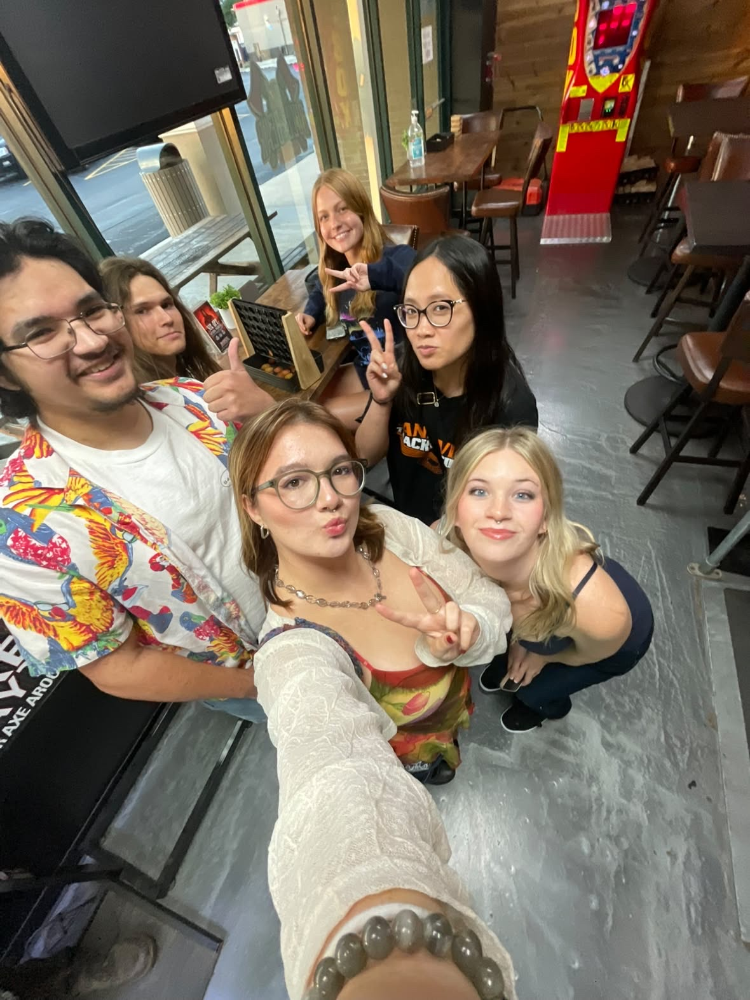
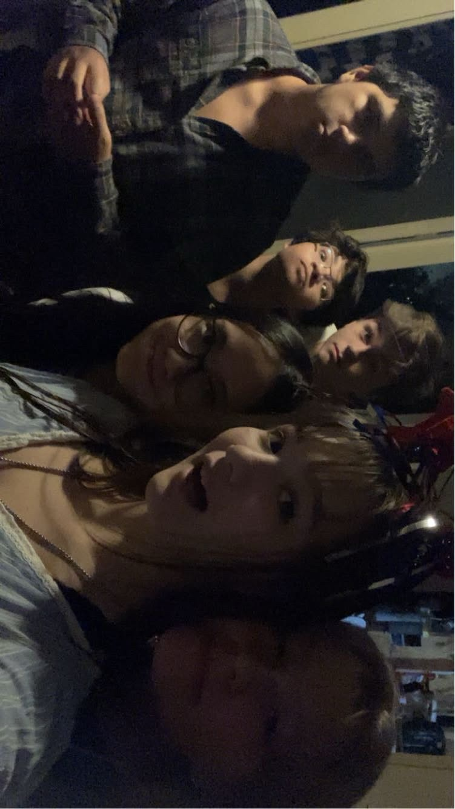
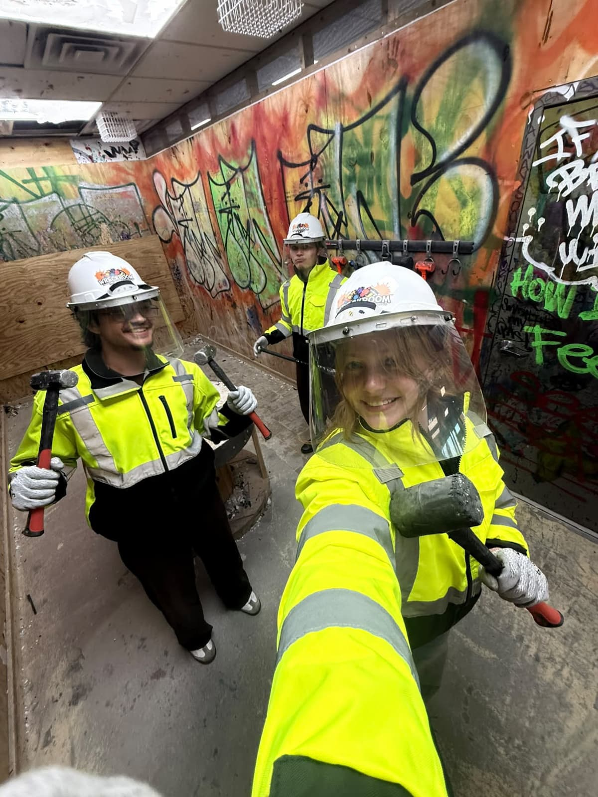

Hey guys. I was looking through some photos recently and it made me realize how much has happened to me in just the last 200 weeks of my life. I graduated highschool, fell in love, got my associates, went to Europe TWICE, and got another chance at hanging out with all of you! All this thinking got me feeling pretty gracious, and when I'm in tune with that I tend to get a little creative. In short, this is just a small thing I made in order to show my appreciation! I'll come back to update the site from time to time. As always, thanks for being my friend - Sincerely, Miles
First hangout back with everyone. Maybe we can do another one some day.

AWWWWWW! Look at all of us! Very kawaii.

I liked this one because of little Luis if i'm being honest. Can you believe how long it's been?

It felt a little like a fever dream with the Marvin Gaye and the sweating. I like the active hangouts so this was enjoyable.